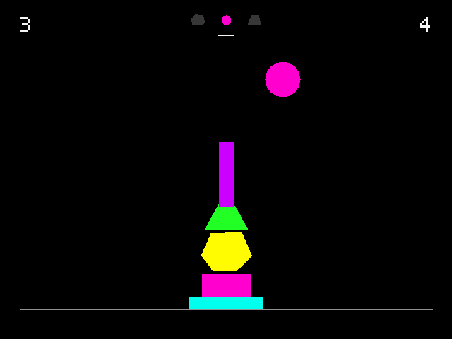

STAK
a physics sculpture

A physics sculpture for small computers. Choose from three shapes, turn and place each one, and balance six pieces into a structure that stands on its own.
It is harder than it looks. A run to five is good.
Handheld (PortMaster)
stak.zip26 KB · Tested on RG35XXSP (muOS) and R36S (ArkOS).
Desktop versions
The same piece for computers, with Python built in. Windows may warn that the app is from an unknown developer; it isn’t signed, because signing costs money every year. Choose More info, then Run anyway.
Install on a handheld
- You need a Linux handheld with PortMaster installed.
- Copy
stak.zip, still zipped, into theautoinstallfolder inside PortMaster on your SD card. - Open PortMaster once. STAK installs itself and appears under Ports.
Controls
| D-pad up and down | choose shape |
| D-pad left and right | move shape |
| L1 and R1 | turn shape (hold to keep turning) |
| Left stick | choose and move, where present |
| Right stick | turn, where present |
| A | drop or confirm |
| B | cancel |
| Start | restart prompt |
| Hold Select | reset best score prompt |
| Select and Start | exit |
Keyboard
| Left and right arrows | move shape |
| Up and down arrows | choose shape |
| Z and X | turn shape |
| Space | drop or confirm |
| Backspace | cancel |
| R | restart |
| Hold Delete | reset best score |
| Esc | exit |
A game controller also works on desktop.
Notes
Pure Python on PortMaster’s python_3.11 runtime. No bundled libraries, fonts or sounds. Made for 640 by 480 screens; it letterboxes on others.
STAK is freeware. You are welcome to share unmodified copies.